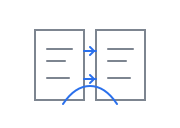
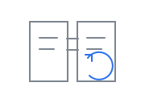

satlib_ModeCal.c · calcu2()
坐标转换方向可能与项目约定不一致
Evidence · input: ECI → expected: VVLH
VS Code native feel · engineering review · human-controlled workflow
satlib_ModeCal.c · calcu2()
坐标转换方向可能与项目约定不一致
修正 calcu2 中 ECI→VVLH 转换方向
Why
当前矩阵实际执行了逆方向变换
Scope
satlib_ModeCal.c · calcu2()
Impact
局部，无接口变化
C_ab maps b → a
x_a = C_ab · x_b
Current scope
satlib_ModeCal.c
Context
2 earlier messages omitted
AI 认为问题已经定位：ECI→VVLH 矩阵方向不一致
Next: 修改 calcu2() 1 处

